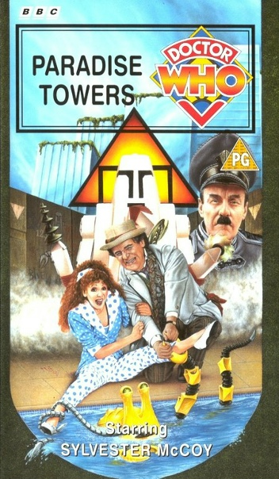
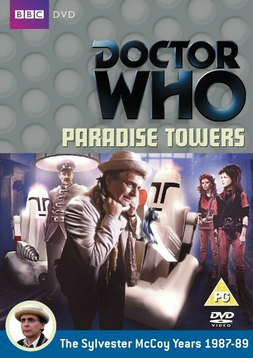
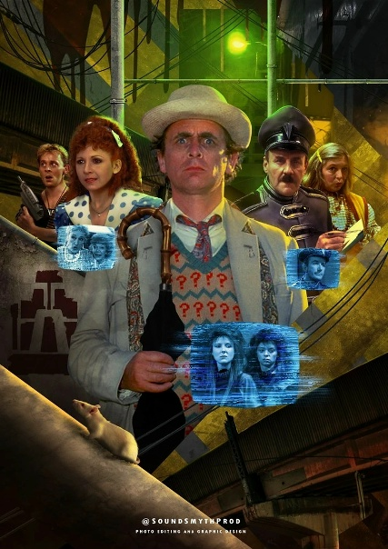
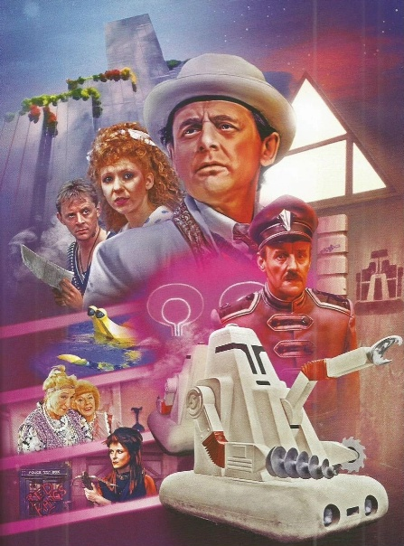

Эра Седьмого Доктора (24 сезон)
<<< НАЗАД ||| 2. Райские башни ||| ДАЛЬШЕ >>>
Субтитры: Русские и Английские |  |
|---|---|
Субтитры: только Английские | |
Paradise Towers
Дата выхода: 5-26 октября 1987
Формат: 4 эпизода по 25 мин.
Доктор и Мел прибывают в Райские башни — жилой комплекс, когда-то гордость архитектуры, а теперь заброшенный и опасный. Башни заселены двумя группами: пожилыми женщинами-канатоходцами и бандами девочек-чистильщиц. А в подземельях прячется нечто, поглощающее обитателей одну за другой.
Сценарий написала Кейт О'Мара... нет, не угадали — Бетти Уиллкок, её единственный вклад в сериал. Девочки-чистильщицы с криками «Очистка! Очистка!» стали культовыми — и вдохновили создания в более поздних сериях. Съёмки прошли в Бирмингеме, в реальном жилом комплексе, который через пару лет снесли.
 VHS - октябрь 1995 |  DVD - июль 2011 |  Blu-ray - 28 июня 2021 * Версия в нашей группе |
|---|





Трейлер: